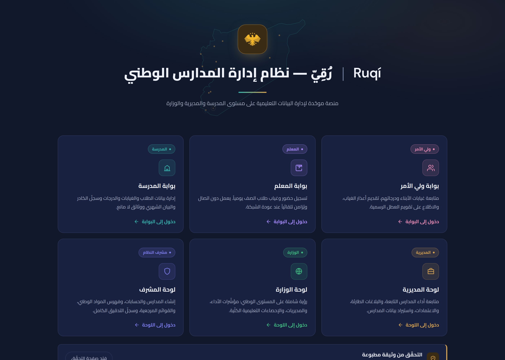

ثلاث فجوات تتكرّر في كل مديرية
قبل أي حديث عن حلّ، هذا ما تواجهه المدارس والمديريات فعلياً كل يوم.
سجلّات ورقية لا تتزامن
بيانات الحضور والدرجات تُكتب يدوياً في كل مدرسة، ولا تصل إلى المديرية إلا بعد أيام — وأحياناً لا تصل إطلاقاً.
لا رؤية وطنية آنية
لا تعرف الوزارة اليوم كم طالباً حاضر في البلاد كلّها، ولا أي مدرسة تحتاج تدخّلاً عاجلاً الآن.
وثائق يصعب التحقّق منها
شهادات الجلاء ووثائق «لا مانع» تُطبَع وتُوقَّع يدوياً، بلا طريقة سريعة للتأكّد من صحّتها.
تربط كل مستويات النظام التعليمي
بنية واحدة، أربع مستويات
كل مستوى يرى ما يخصّه بالضبط — لا أكثر ولا أقلّ.
ستّ بوّابات، تجربة واحدة
كل مستخدم يدخل من بوابته الخاصّة، بصلاحيات مضبوطة لدوره فقط.
بوابة ولي الأمر
متابعة غياب الأبناء ودرجاتهم وتقديم الأعذار.
بوابة المعلم
تسجيل حضور الصفّ يومياً، حتى بلا إنترنت.
بوابة المدرسة
إدارة الطلاب والكادر والوثائق الرسمية.
لوحة المديرية
متابعة أداء كل مدرسة تابعة والبلاغات الطارئة.
لوحة الوزارة
رؤية وطنية شاملة على مستوى كل المحافظات.
لوحة المشرف
إدارة الحسابات والصلاحيات وسجلّ التدقيق.
يعمل حتى بلا إنترنت
انقطاع الشبكة أو الكهرباء لا يوقف العمل — ولا يُفقِد أي بيانات.
كل مدرسة ترى بياناتها فقط
مدير مدرسة في دمشق لا يمكنه رؤية بيانات مدرسة في حلب — ولا حتى لو حاول تقنياً. الحماية مبنية داخل قاعدة البيانات نفسها، مستقلّة عن واجهة الاستخدام.
وثائق رسمية لا يمكن تزويرها
كل جلاء مدرسي يحمل رمز QR فريداً — أي جهة تمسحه فترى فوراً هل الوثيقة صادرة فعلاً عن النظام.
هذا التطبيق فعلياً — بلا أي تعديل

جاهز للتشغيل الآن
لا حاجة لأي بنية تحتية جديدة أو مشروع تطوير مبتدئ من الصفر.
تطبيق ويب تقدّمي
يُثبَّت من المتصفّح مباشرة، بلا متجر تطبيقات وبلا موافقات خارجية.
يعمل على أي جهاز
حاسوب أو هاتف أو لوحي — بمتصفّح واحد فقط.
لا تكلفة تراخيص
التقنيات المستخدَمة مفتوحة، والاستضافة قابلة للتكييف حسب حاجة الوزارة.
بنية تحتية سيادية
يمكن استضافة قاعدة البيانات كاملةً على خوادم داخل سورية أو خوادم الوزارة.
خطّة تبنٍّ تدريجية، لا تحوّل مفاجئ
تجربة محدودة
مديرية واحدة، شهر واحد، بلا التزام طويل الأمد.
تقييم النتائج
قياس الوقت الموفَّر ودقّة البيانات مقارنةً بالنظام الورقي.
توسيع تدريجي
مديرية تلو الأخرى، بمعدّل يناسب جاهزية كل منطقة.